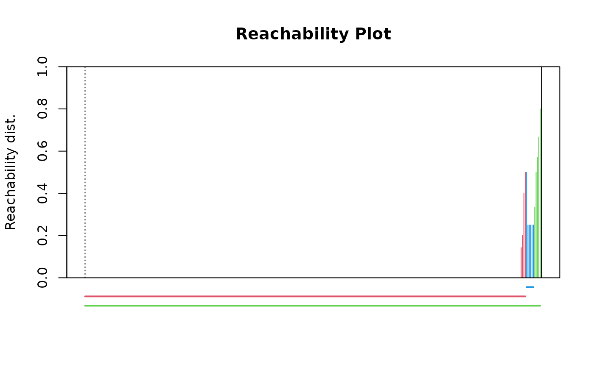

This function performs semi-hierarchical clustering based on dissimilarity using the OPTICS algorithm (Ordering Points To Identify the Clustering Structure).
Usage
hclu_optics(
dissimilarity,
index = names(dissimilarity)[3],
minPts = NULL,
eps = NULL,
xi = 0.05,
minimum = FALSE,
show_hierarchy = FALSE,
algorithm_in_output = TRUE,
...
)Arguments
- dissimilarity
The output object from
dissimilarity()orsimilarity_to_dissimilarity(), or adistobject. If adata.frameis used, the first two columns represent pairs of sites (or any pair of nodes), and the subsequent column(s) contain the dissimilarity indices.- index
The name or number of the dissimilarity column to use. By default, the third column name of
dissimilarityis used.- minPts
A
numericvalue specifying the minPts argument of dbscan. minPts is the minimum number of points required to form a dense region. By default, it is set to the natural logarithm of the number of sites indissimilarity.- eps
A
numericvalue specifying the eps argument of optics. It defines the upper limit of the size of the epsilon neighborhood. Limiting the neighborhood size improves performance and has no or very little impact on the ordering as long as it is not set too low. If not specified (default behavior), the largest minPts-distance in the dataset is used, which gives the same result as infinity.- xi
A
numericvalue specifying the steepness threshold to identify clusters hierarchically using the Xi method (see optics).- minimum
A
booleanspecifying whether the hierarchy should be pruned from the output to only retain clusters at the "minimal" level, i.e., only leaf / non-overlapping clusters. IfTRUE, then the argumentshow_hierarchyshould be set toFALSE.- show_hierarchy
A
booleanspecifying whether the hierarchy of clusters should be included in the output. By default, the hierarchy is not visible in the clusters obtained from OPTICS; it can only be visualized by plotting the OPTICS object. Ifshow_hierarchy = TRUE, the output clusterdata.framewill contain additional columns showing the hierarchy of clusters.- algorithm_in_output
A
booleanindicating whether the original output of dbscan should be returned in the output (TRUEby default, see Value).- ...
Additional arguments to be passed to
optics()(see optics).
Value
A list of class bioregion.clusters with five slots:
name: A
characterstring containing the name of the algorithm.args: A
listof input arguments as provided by the user.inputs: A
listdescribing the characteristics of the clustering process.algorithm: A
listcontaining all objects associated with the clustering procedure, such as the original cluster objects.clusters: A
data.framecontaining the clustering results.
In the algorithm slot, if algorithm_in_output = TRUE, users can
find the output of optics.
Details
The OPTICS (Ordering points to identify the clustering structure) is a
semi-hierarchical clustering algorithm which orders the points in the
dataset such that points which are closest become neighbors, and calculates
a reachability distance for each point. Then, clusters can be extracted in a
hierarchical manner from this reachability distance, by identifying clusters
depending on changes in the relative cluster density. The reachability plot
should be explored to understand the clusters and their hierarchical nature,
by running plot on the output of the function
if algorithm_in_output = TRUE: plot(object$algorithm).
We recommend reading (Hahsler et al., 2019) to grasp the
algorithm, how it works, and what the clusters mean.
To extract the clusters, we use the extractXi function which is based on the steepness of the reachability plot (see optics)
References
Hahsler M, Piekenbrock M & Doran D (2019) Dbscan: Fast density-based clustering with R. Journal of Statistical Software 91, 1–30.
See also
For more details illustrated with a practical example, see the vignette: https://biorgeo.github.io/bioregion/articles/a4_1_hierarchical_clustering.html.
Associated functions: nhclu_dbscan
Author
Boris Leroy (leroy.boris@gmail.com)
Pierre Denelle (pierre.denelle@gmail.com)
Maxime Lenormand (maxime.lenormand@inrae.fr)
Examples
dissim <- dissimilarity(fishmat, metric = "all")
clust1 <- hclu_optics(dissim, index = "Simpson")
clust1
#> Clustering results for algorithm : hclu_optics
#> - Number of sites: 338
#> Clustering results:
#> - Number of partitions: 1
#> - Number of clusters: 4
# Visualize the optics plot (the hierarchy of clusters is illustrated at the
# bottom)
plot(clust1$algorithm)

# Extract the hierarchy of clusters
clust1 <- hclu_optics(dissim, index = "Simpson", show_hierarchy = TRUE)
clust1
#> Clustering results for algorithm : hclu_optics
#> - Number of sites: 338
#> Clustering results:
#> - Number of partitions: 2
#> - Partitions are hierarchical
#> - Number of clusters: 2 4